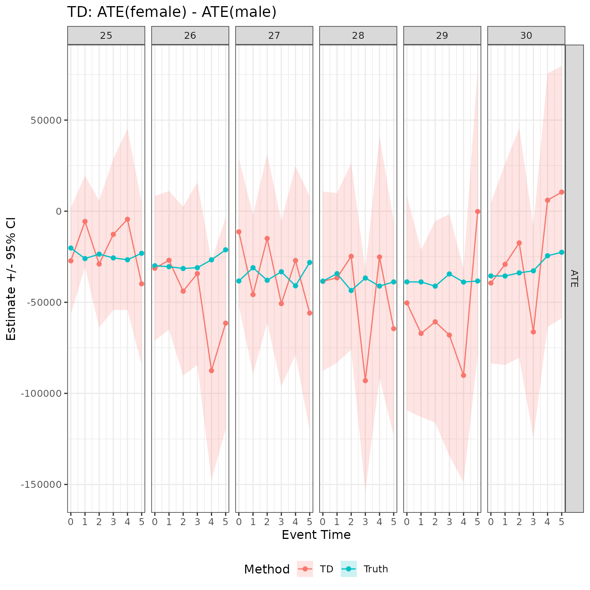
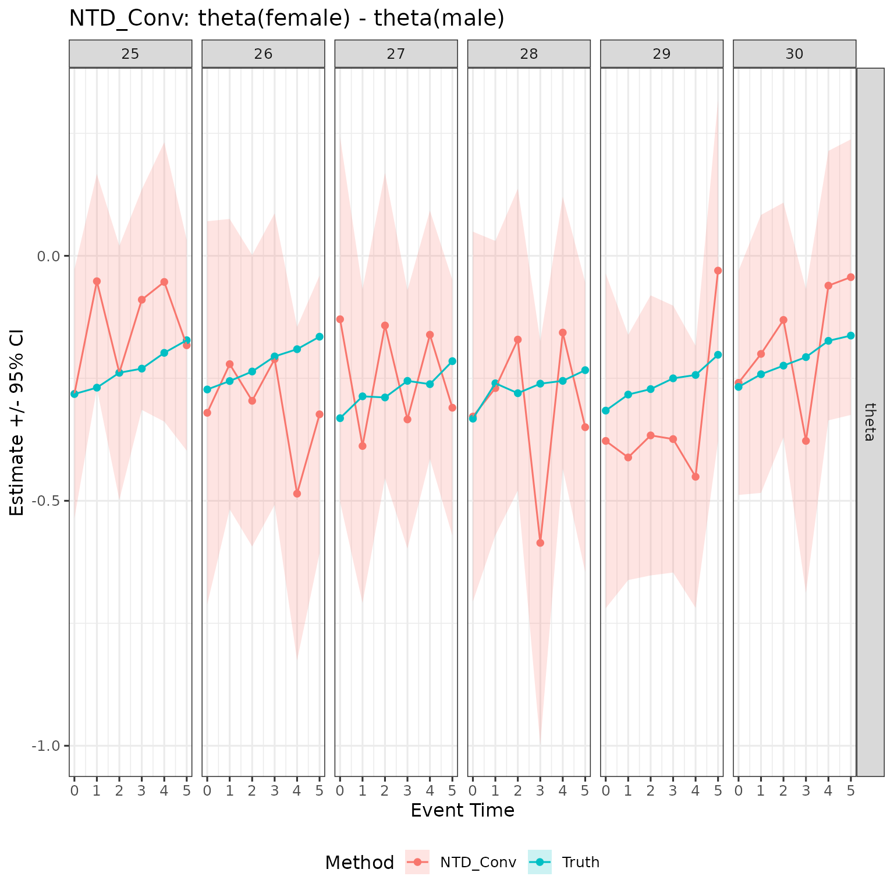
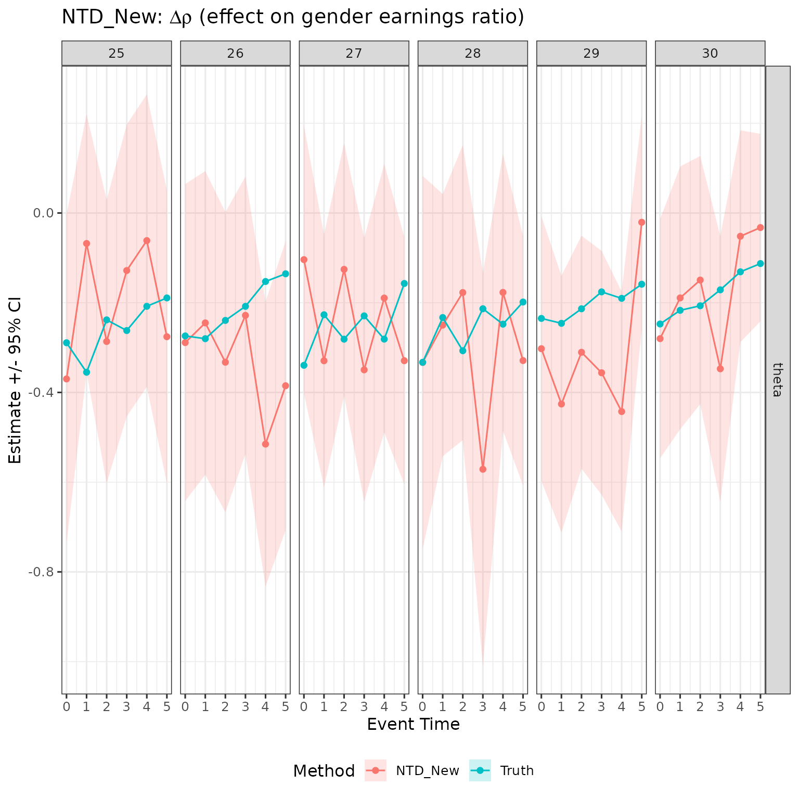
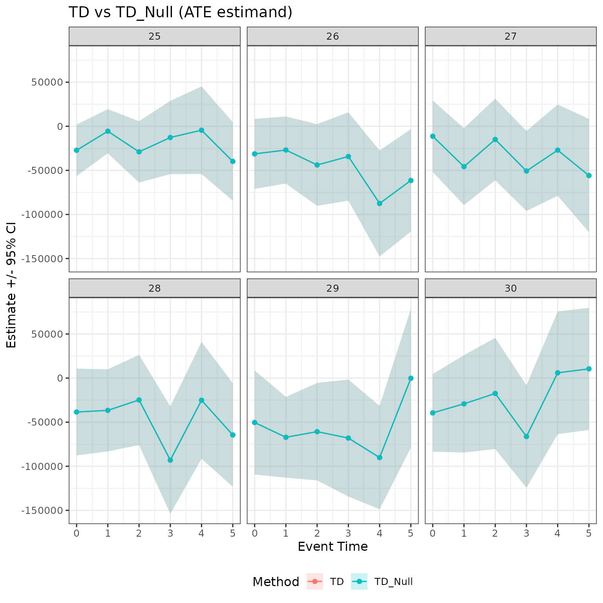
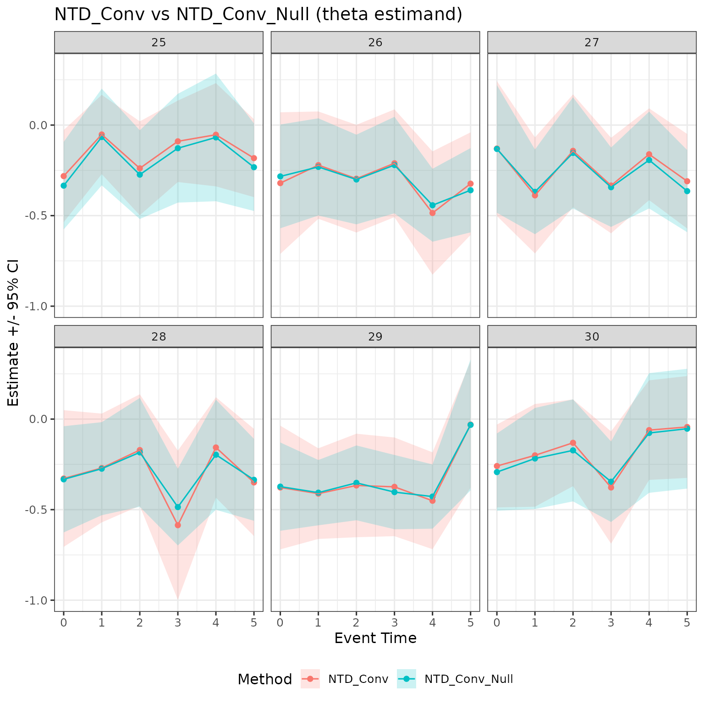

Notation. For symbol definitions, see the simulation vignette.
Overview
This vignette covers the gender-gap estimands returned by
multiple_treatment_group_analysis(): TD,
NTD_Conv, and NTD_New. For the
underlying gender-specific DID estimands (DID_Female, DID_Male) that
these build on, see the DID-estimation vignette.
All three estimands compare the female and male child-penalty estimates to characterise the gender earnings gap induced by parenthood.
TD (Treatment Difference) is the gap in levels: It answers: how much larger (in currency units) is the earnings drop for mothers than for fathers?
NTD_Conv (Conventional Normalised Treatment Difference) is the gap in normalised effects — what the literature calls the conventional child penalty: It answers: how much larger is the proportional earnings drop for mothers relative to their own counterfactual, compared to that of fathers relative to theirs? Here is defined in the DID estimation vignette.
The gender earnings ratio is . NTD_New measures how parenthood changes this ratio:
NTD_New (New Normalised Treatment Difference) is a new estimand from the paper. Instead of differencing two gender-specific normalised effects, it measures the effect of parenthood on the gender earnings ratio directly: It answers: by how much does having a child reduce the female-to-male earnings ratio, measured against what the ratio would have been without children?
NTD_Conv and NTD_New differ because NTD_Conv normalises each gender’s effect by its own counterfactual and then differences, whereas NTD_New normalises the joint gender ratio. When the male child penalty is non-negligible, the two estimands diverge.
Simulate data
library(childpen)
set.seed(42)
N <- 2000
data <- simulate_data(n_individuals = N)
head(data)
#> id female age D Y_inf Y
#> 1 1 1 20 25 32193 32193
#> 2 1 1 21 25 46159 46159
#> 3 1 1 22 25 79432 79432
#> 4 1 1 23 25 75703 75703
#> 5 1 1 24 25 291366 291366
#> 6 1 1 25 25 139286 94345Run estimation
We estimate all methods jointly with
multiple_treatment_group_analysis(). The function returns
one row per treatment group × event time × estimand × method
combination.
res <- multiple_treatment_group_analysis(
data = data,
treatment_groups = 25:30,
periods_post = 5,
periods_pre = NULL,
max_age = 40,
min_age = 20,
pre = 1,
verbose = FALSE
)Compute simulation truth
The simulation provides potential outcomes so we can benchmark every estimand against its true value.
PO_tidy <- data |>
mutate(event_time = age - D) |>
rename(d = D) |>
group_by(female, d, event_time) |>
summarize(APO_obs = mean(Y), APO = mean(Y_inf)) |>
mutate(ATE = APO_obs - APO,
theta = ATE / APO) |>
filter(event_time %in% 0:5, d %in% 25:30)
# TD truth: ATE(female) - ATE(male)
truth_td <- PO_tidy |>
select(female, d, event_time, ATE) |>
pivot_wider(names_from = female, values_from = ATE, names_prefix = "ATE_f") |>
rename(ATE_female = ATE_f1, ATE_male = ATE_f0) |>
mutate(est = ATE_female - ATE_male,
method = "TD", estimand = "ATE",
ci_l = NA_real_, ci_h = NA_real_,
truth = TRUE)
# NTD_Conv truth: theta(female) - theta(male)
truth_ntd_conv <- PO_tidy |>
select(female, d, event_time, theta) |>
pivot_wider(names_from = female, values_from = theta, names_prefix = "th_f") |>
rename(th_female = th_f1, th_male = th_f0) |>
mutate(est = th_female - th_male,
method = "NTD_Conv", estimand = "theta",
ci_l = NA_real_, ci_h = NA_real_,
truth = TRUE)
# NTD_New truth: Y(f)/Y(m) - APO(f)/APO(m)
truth_ntd_new <- PO_tidy |>
select(female, d, event_time, APO_obs, APO) |>
pivot_wider(names_from = female,
values_from = c(APO_obs, APO),
names_sep = "_f") |>
rename(Y_female = APO_obs_f1, Y_male = APO_obs_f0,
APO_female = APO_f1, APO_male = APO_f0) |>
mutate(est = (Y_female / Y_male) - (APO_female / APO_male),
method = "NTD_New", estimand = "theta",
ci_l = NA_real_, ci_h = NA_real_,
truth = TRUE)
truth_all <- bind_rows(truth_td, truth_ntd_conv, truth_ntd_new) |>
select(d, event_time, estimand, method, est, ci_l, ci_h, truth)TD results
TD measures the gap in earnings levels: . A negative value means mothers’ earnings fall more than fathers’ at that event time, in the same units as the outcome variable.
plot_td <- res |>
filter(method == "TD") |>
mutate(truth = FALSE) |>
select(d, event_time, estimand, method, est, ci_l, ci_h, truth) |>
bind_rows(truth_all |> filter(method == "TD")) |>
mutate(label = ifelse(truth, "Truth", "TD"))
plot_td |>
ggplot(aes(x = event_time, y = est, ymin = ci_l, ymax = ci_h,
color = label, fill = label)) +
geom_ribbon(color = NA, alpha = 0.2) +
geom_point() + geom_line() +
facet_grid(cols = vars(d), rows = vars(estimand), scales = "free") +
labs(x = "Event Time", y = "Estimate +/- 95% CI",
color = "Method", fill = "Method",
title = "TD: ATE(female) - ATE(male)") +
theme(legend.position = "bottom")
TD is estimated in the same units as the outcome. Across treatment groups, the estimates track the true gap closely, with confidence intervals widening for later groups (smaller sample sizes in each cell).
NTD_Conv results
NTD_Conv measures the gap in normalised effects: . This is the conventional child penalty reported in most of the literature. A value of means mothers’ earnings fall 20 percentage points more (relative to their own counterfactual) than fathers’ earnings do relative to theirs.
plot_ntd_conv <- res |>
filter(method == "NTD_Conv") |>
mutate(truth = FALSE) |>
select(d, event_time, estimand, method, est, ci_l, ci_h, truth) |>
bind_rows(truth_all |> filter(method == "NTD_Conv")) |>
mutate(label = ifelse(truth, "Truth", "NTD_Conv"))
plot_ntd_conv |>
ggplot(aes(x = event_time, y = est, ymin = ci_l, ymax = ci_h,
color = label, fill = label)) +
geom_ribbon(color = NA, alpha = 0.2) +
geom_point() + geom_line() +
facet_grid(cols = vars(d), rows = vars(estimand), scales = "free") +
labs(x = "Event Time", y = "Estimate +/- 95% CI",
color = "Method", fill = "Method",
title = "NTD_Conv: theta(female) - theta(male)") +
theme(legend.position = "bottom")
Because the simulation sets the male child penalty to zero, NTD_Conv and TD tell a similar story here. They diverge when fathers also experience earnings effects.
NTD_New results
NTD_New measures the effect of parenthood on the female-to-male earnings ratio, . Unlike NTD_Conv, it does not normalise each gender separately; instead it asks by how much the gender pay ratio shifts when the couple has a child. A value of means the female-to-male earnings ratio falls by 15 percentage points due to parenthood.
plot_ntd_new <- res |>
filter(method == "NTD_New") |>
mutate(truth = FALSE) |>
select(d, event_time, estimand, method, est, ci_l, ci_h, truth) |>
bind_rows(truth_all |> filter(method == "NTD_New")) |>
mutate(label = ifelse(truth, "Truth", "NTD_New"))
plot_ntd_new |>
ggplot(aes(x = event_time, y = est, ymin = ci_l, ymax = ci_h,
color = label, fill = label)) +
geom_ribbon(color = NA, alpha = 0.2) +
geom_point() + geom_line() +
facet_grid(cols = vars(d), rows = vars(estimand), scales = "free") +
labs(x = "Event Time", y = "Estimate +/- 95% CI",
color = "Method", fill = "Method",
title = expression(paste("NTD_New: ", Delta, rho, " (effect on gender earnings ratio)"))) +
theme(legend.position = "bottom")
NTD_New is most informative when male and female earnings levels differ substantially, because the ratio is sensitive to the baseline gender gap as well as to the child penalty itself.
Bias-corrected estimators: TD_Null and NTD_Conv_Null
A common assumption in the child-penalty literature is that
fathers are unaffected by having a child,
i.e. .
childpen provides bias-corrected versions of TD and
NTD_Conv that impose this restriction, labelled TD_Null and
NTD_Conv_Null.
Under , the male ATE is absorbed into the female counterfactual. Formally, . These null-restricted estimands act as a robustness check: if the uncorrected TD/NTD_Conv and their null-restricted counterparts agree, the results are insensitive to whether fathers are actually affected.
# Combine TD and TD_Null
plot_null <- res |>
filter(method %in% c("TD", "TD_Null", "NTD_Conv", "NTD_Conv_Null")) |>
select(d, event_time, estimand, method, est, ci_l, ci_h) |>
mutate(family = case_when(
method %in% c("TD", "TD_Null") ~ "TD family",
method %in% c("NTD_Conv", "NTD_Conv_Null") ~ "NTD_Conv family"
))
plot_null |>
filter(estimand == "ATE", family == "TD family") |>
ggplot(aes(x = event_time, y = est, ymin = ci_l, ymax = ci_h,
color = method, fill = method)) +
geom_ribbon(color = NA, alpha = 0.2) +
geom_point() + geom_line() +
facet_wrap(~ d) +
labs(x = "Event Time", y = "Estimate +/- 95% CI",
color = "Method", fill = "Method",
title = "TD vs TD_Null (ATE estimand)") +
theme(legend.position = "bottom")
plot_null |>
filter(estimand == "theta", family == "NTD_Conv family") |>
ggplot(aes(x = event_time, y = est, ymin = ci_l, ymax = ci_h,
color = method, fill = method)) +
geom_ribbon(color = NA, alpha = 0.2) +
geom_point() + geom_line() +
facet_wrap(~ d) +
labs(x = "Event Time", y = "Estimate +/- 95% CI",
color = "Method", fill = "Method",
title = "NTD_Conv vs NTD_Conv_Null (theta estimand)") +
theme(legend.position = "bottom")
In this simulation the male child penalty is zero by construction, so TD and TD_Null (and NTD_Conv and NTD_Conv_Null) are numerically similar. In empirical applications where fathers exhibit a modest earnings response, the null-restricted versions will differ and the gap provides a sense of how much the assumption matters.
When to use which estimand
| Estimand | Scale | Use when… |
|---|---|---|
| TD | Levels | You want the absolute currency gap; requires comparable earnings units across genders. |
| NTD_Conv | Proportional | Conventional child penalty — directly comparable to the existing literature (Kleven et al. 2019). |
| NTD_New | Ratio change | Effect on gender earnings ratio — identified under NTD without additional assumptions (Theorem 2 in the paper). |
| TD_Null / NTD_Conv_Null | Same as TD / NTD_Conv | Robustness check under the assumption that fathers are unaffected. |
For most applied work, NTD_Conv is the directly comparable quantity to the existing child-penalty literature. NTD_New is the correctly identified estimand under the NTD assumption (see the paper, Theorem 2) and is preferable when the research question is about gender inequality in earnings. TD is useful when policy interest is in absolute earnings gaps. The null-corrected variants are always worth reporting alongside the main estimates as a sensitivity analysis.